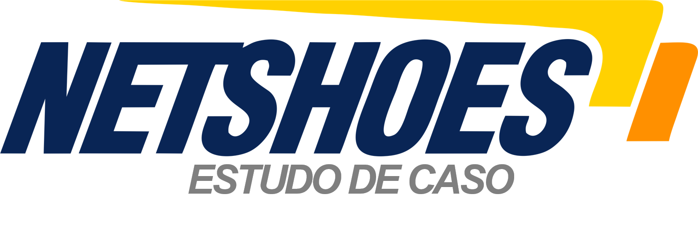

Netshoes: maior e-commerce de produtos esportivos do mundo
- Fevereiro de 2000: a Netshoes inicia suas atividades em São Paulo como uma lojinha de calçados localizada ao lado da faculdade Mackenzie. A ideia era aproveitar o público universitário que circulava pelas imediações para construir a clientela. O negócio era tocado pelos primos Marcio Kumruian e Hagop Chabab e mais dois vendedores.
- Fevereiro de 2015: em seu site, a Netshoes se intitula a maior loja de comércio eletrônico voltada para artigos esportivos do mundo, posição respaldada por consultorias como a americana Internet Retailer.
- O faturamento da empresa, desde 2012, ultrapassou a barreira de R$ 1,2 bilhão, sendo que em 2009 era de “apenas” R$ 155 milhões. A empresa praticamente dobrou de tamanho a cada 12 meses até chegar ao primeiro bilhão, com faturamento de R$ 366 milhões em 2010 e R$ 716 milhões em 2011.